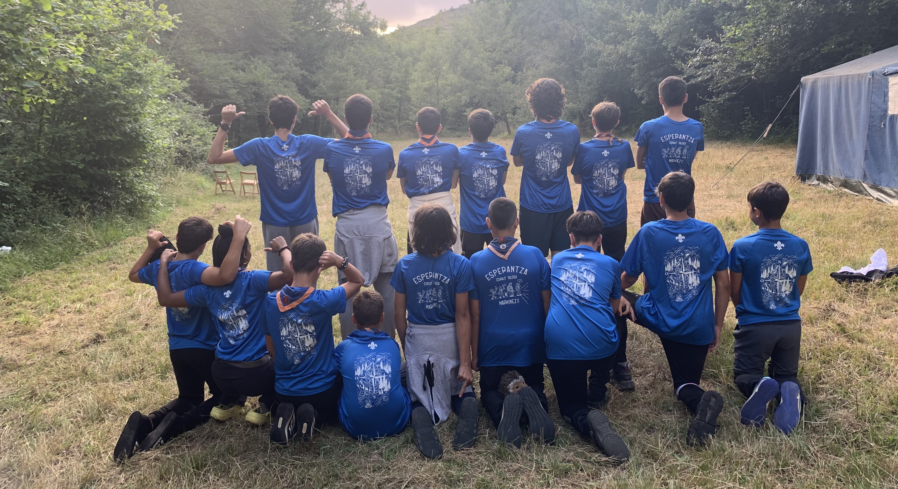
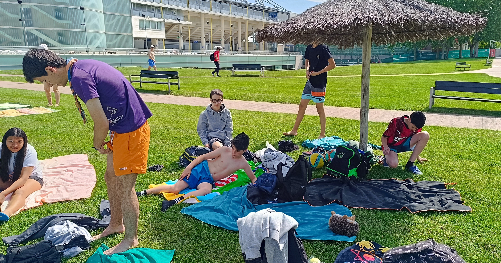
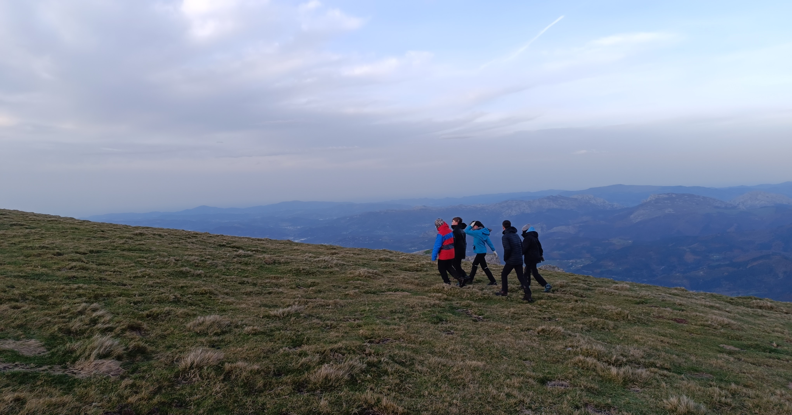
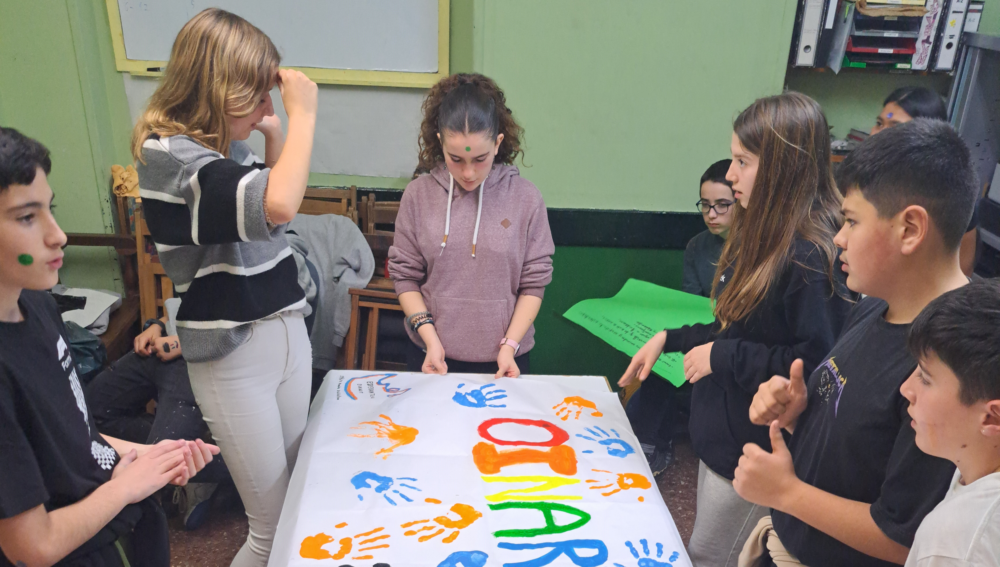
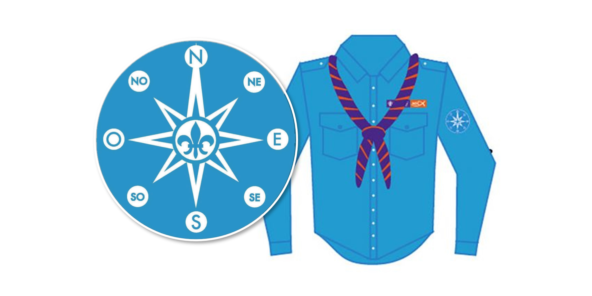

Una etapa de descubrimiento real, autonomía y compromiso para jóvenes de 13 a 14 años.

La rama de Rangers (Oinarinak en euskera) es la etapa en la que los jóvenes comienzan a descubrir el mundo real. Es un momento de gran cambio y autodescubrimiento en el que afrontan nuevos retos. El conjunto de Rangers se denomina "Tropa".

La vida en Rangers se organiza en patrullas, pequeños grupos con nombre de animales donde cada persona tiene un rol. En ellas aprenden a organizarse, convivir y asumir responsabilidades, creciendo juntos como comunidad.

La Aventura es la gran actividad anual de la tropa, organizada por los propios Rangers. A lo largo del curso la imaginan, preparan y llevan a cabo juntos, aprendiendo a trabajar en equipo, asumir responsabilidades y hacer realidad sus propias ideas.

Los Rangers aprenden técnicas de orientación fundamentales como el uso de mapa y brújula, la vida en la naturaleza y habilidades de supervivencia. A lo largo del curso organizamos varias salida por el monte para aplicar estos conocimientos.

La Carta Ranger es el compromiso del conjunto de la Tropa para el curso. En ella, los Rangers definen juntos qué tipo de grupo quieren ser, estableciendo objetivos, normas y valores que guiarán su camino durante el año.

El progreso personal se representa a través de la Rosa de los Vientos, que guía a cada Ranger en su desarrollo. En ella trabajan diferentes áreas de crecimiento, avanzando poco a poco y marcando su propio camino.

Al final de la etapa, los Rangers viven el paso de rama, una ceremonia muy importante donde se reconoce su crecimiento. Al realizar la tótem, se despiden de la Tropa y se preparan para comenzar la etapa de Pioneros, llevando consigo todo lo aprendido.